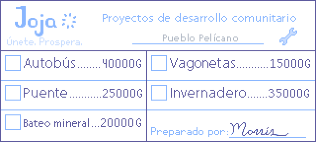

Para reconstruir la granja, el jugador deberá elegir entre dos rutas de juego: el Centro Cívico y el MercaJoja. Cuando comienza el juego, se le cuenta al jugador que en Pueblo Pelícano se ha instalado una sucursal de una cadena de supermercados, y que solo necesitan un miembro mas para derribar el antiguo salón comunitario y convertirlo en un almacen de sus productos.
Aquí es cuando el jugador deberá elegir entre ser miembro del supermercado o reparar el abandonado salón comunitario. Para quienes estén jugando su primera partida, es recomendable elegir la ruta del Centro Cívico, ya que en ésta se deben utilizar todos los aspectos del juego y podremos sacarle mas jugo a la experiencia.
Para arreglar el Centro Cívico, tendremos que completar Lotes con distintos desafíos, entre estos encontraremos: recolecciones de frutos y cultivos según estación, pesca, productos de origen animal, objetos encontrados en las minas, etc. Cada Lote que sea llenado, arreglará una parte de nuestra granja o del pueblo.
En cambio, si decidimos ser parte del Mercajoja, todas las refacciones costarán dinero, el cual recaudaremos por nuestros medios vendiendo nuestros cultivos, productos que dan los animales de la granja, y los peces que pescamos.
Elegir cualquiera de las rutas tiene sus consecuencias positivas y negativas. Por un lado, si elegimos la ruta del Centro Cívico, el Mercajoja cerrará sus puertas, y hará que dos NPC (Shane y Sam) pierdan sus trabajos para siempre. Por otro lado, si elegimos la ruta del MercaJoja, la tienda Pierre's entrará en bancarrota, y tu personaje será odiado por varios de los NPC que valoran la industria local (Como Lewis y Robin).